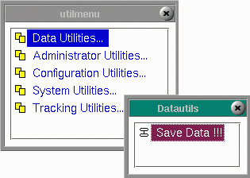

Administrator Utilities
|
Administrator
Utilities are available from the Utility Menu.
The Administrator Utilities Menu holds the utilities affecting the overall program functioning such as those associated with security, logging, hot keys and the scheduling of routines. Click any of the links below to access that menu help.
|
 |
Copyright © 2001 Fortna Inc. All rights reserved.